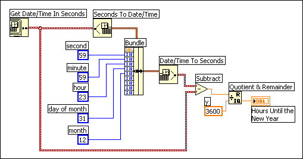

Add
Add  Find
FindComplete the following steps to replace or change the value of one or two elements of a cluster without affecting the other elements.
Add FindThe following block diagram computes the number of hours until January 1 using the date-time cluster. Because the middle terminal of the Bundle function is wired, the only element input terminals that must be wired are those with replacement values. The values of the unwired elements do not change.
